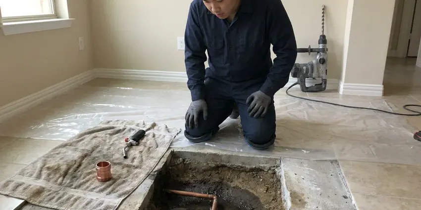

Copper Pipe Leak Repair in Vienna, WV
For dependable copper pipe leak repair in Vienna, WV, GJK Plumbing provides quick and reliable service to protect your home from water damage.
- Expert Copper Soldering
- Licensed Plumbers
- Upfront Pricing
- Clean Solder and Press Fittings
Stop Copper Pinhole Leaks Before They Spread in Vienna, WV.
Our team is ready to provide quick and lasting solutions for your plumbing issues.
Copper Pipe Leak Repair in Vienna, WV for Pinholes and Failed Joints
At GJK Plumbing, we understand the challenges that copper pipe leaks present in Vienna, WV. Our licensed plumbers are equipped to handle any repair, whether it involves re-piping a section or performing a precise solder repair, always following local plumbing codes.
Our expertise includes:
- Inspection of nearby copper for thinning, pitting and green corrosion
- Code-compliant re-piping and section replacement.
- Expert repair for pinhole leaks, corrosion and burst pipes.

Additional Plumbing Repair Services in Vienna, WV
We offer expert plumbing repair services across Vienna, WV to stop leaks, clear blockages, and keep every fixture working the way it should.


Customers
Why Choose GJK Plumbing for Copper Pipe Leak Repair in Vienna, WV?
Choosing GJK Plumbing for your copper pipe leak repair means choosing a team that prioritizes quality and your peace of mind. We use proven practices and materials so every repair is built to last.
- Precise Detection, Thermal imaging pinpoints hot and cold copper leaks inside walls and floors.
- Lasting Repairs, We don't just patch leaks, we provide complete solutions that address the root cause, using high-quality materials for durable fixes.
- Local Knowledge, We understand how West Virginia soil conditions and water chemistry can affect copper pipes and lead to certain types of corrosion and leaks.
Citywide Coverage
GJK Plumbing proudly serves every neighborhood in Vienna, providing fast and professional copper pipe leak repair services. No matter where you are within the Vienna area, our team is ready to respond to your plumbing emergency.
Experienced Team
Our team of plumbers has extensive experience with the copper pipe systems common in West Virginia homes, from older construction to modern builds. We've seen and properly repaired every type of copper pipe leak.
Safety-First Approach
When soldering, we use heat shields, wet rags and a fire extinguisher, and we check the area afterward for any smoldering. In sensitive spots, we use flame-free press fittings instead.
Trusted Certified Vienna Plumbing Services Professionals
At GJK Plumbing, we take pride in providing certified plumbing services throughout Vienna, WV. Backed by recognized industry credentials, our experienced plumbers combine technical skill with genuine customer care. Whether it is repair, installation, or maintenance, we follow strict safety and quality standards to deliver long-lasting results you can trust.
Call Us Now PHCC Plumbing Contractor Recognition
PHCC Plumbing Contractor Recognition Better Business Bureau (BBB) Accreditation
Better Business Bureau (BBB) Accreditation Angi Certified Pro
Angi Certified Pro ISO 9001 Quality Management Certification
ISO 9001 Quality Management CertificationDependable Copper Pipe Leak Repair Services in Vienna, WV
Hot Water Copper Line Repair in Vienna, WV
Hot water lines see more corrosion than cold lines because heat speeds up chemical reactions. Recirculation pumps that run constantly can also wear copper from the inside. We repair leaking hot lines and can adjust or add timers to your recirculation system. That reduces wear and lowers energy costs.

Copper Slab Leak Repair in Vienna
Many homes built on slabs have copper water lines running under the concrete. When those lines leak, you may notice warm spots on the floor, the sound of running water or a moving meter. We locate the leak electronically and either repair it through the slab or reroute the line overhead. We explain both options with clear pricing.
Emergency Copper Leak Services in Vienna
Plumbing emergencies don't wait for business hours, and a copper pipe leak can quickly escalate into a major problem. GJK Plumbing provides 24/7 emergency copper pipe leak repair services in Vienna. Whether it's a gushing leak or a steady drip threatening your property, our emergency response team is equipped to handle urgent repairs. We focus on containing the water damage, making immediate repairs and then planning any necessary follow-up work to restore your plumbing system fully.
Emergency Copper Pipe Leak Repair in Vienna
Plumbing emergencies don't wait for business hours. If you have a sudden copper pipe leak in Vienna, our emergency team is available to provide prompt assistance. We understand the urgency of stopping water damage and restoring your plumbing. Our technicians arrive quickly, equipped to handle urgent repairs and contain the situation effectively, day or night.
Underground Copper Pipe Leak Repair in Vienna
Leaking underground copper pipes can lead to significant water loss and foundation issues, especially after heavy rainfall. We use trenchless repair methods where possible to fix or replace damaged underground copper lines, reducing the need for major excavation. This preserves your landscaping and minimizes the overall impact on your property.
Copper Pinhole Leak Repair in Vienna
Pinhole leaks are tiny holes that form when the inner wall of copper pipe erodes or pits. They often appear in thin Type M pipe and on hot water lines where velocity and temperature are higher. We cut out the affected section and replace it with new Type L copper or a PEX transition. While the wall is open, we inspect nearby pipe for discoloration or thinning.
Corrosion-Related Leak Repair in Vienna
Corrosion is a natural enemy of copper pipes and is made worse by certain water chemistries. Water hardness in West Virginia ranges from moderate to hard in many areas, and mineral scale is a common issue for water heaters and fixtures. This can lead to thinning pipe walls and eventual leaks. Our team assesses the extent of corrosion, which may show up as blue-green stains on pipes or fixtures. For localized corrosion, we perform spot repairs, but if corrosion is widespread, we may recommend re-piping sections to prevent recurring issues. We make sure all new connections are properly sealed and protected.

Copper Fitting and Valve Repair in Vienna
Angle stops, shutoff valves and copper fittings under sinks and behind toilets can weep or seize over time. Hard water minerals build up inside valves and prevent them from closing. We replace failing valves and fittings with quarter-turn ball valves that are easier to operate. That makes future repairs and emergencies easier to manage.
Copper Pipe Leak Repair Near Me in Vienna, WV
If you are searching for copper pipe leak repair near me, chances are you have spotted a stain or heard water where there should be none. Our local plumbers can be there fast with the tools to find and fix the leak. We explain what we find before starting the repair.
When you search for "copper pipe leak repair near me" in Vienna, WV, GJK Plumbing is the trusted local choice. Our proximity allows us to provide rapid response times, so your plumbing emergency is addressed quickly and efficiently. We pride ourselves on being a dependable community partner.
GJK Plumbing at a Glance
- Licensed and insured plumbers serving Vienna, WV
- Same-day appointments and 24/7 emergency response
- Upfront, flat-rate pricing before work begins
- 4.8-star rated by 832+ West Virginia customers
Vienna Map
Vienna Information
- Population
- 10,457
- Area codes
- Local
- Service area
- Vienna and communities within 40 miles
- Nearby
- Parkersburg, New Martinsville, Moundsville, Clarksburg
Copper pipe leaks in Vienna, WV homes are often made worse by water chemistry and soil movement, which can speed up corrosion and stress plumbing systems, so timely and durable repairs matter. Water hardness in West Virginia ranges from moderate to hard in many areas, and mineral scale is a common issue for water heaters and fixtures.
Expert Services
Trust our professionals for reliable GJK Plumbing solutions in Vienna, WV.
Our Specialized Plumbing Services in Vienna, WV
At GJK Plumbing, we provide a complete range of plumbing services across Vienna, WV. From leak detection to full system installations, our team ensures fast, precise, and affordable service for both residential and commercial properties. Explore our core services below:


How Our Copper Pipe Leak Repair Process Works in Vienna, WV
We follow a systematic approach to accurately diagnose and effectively repair any copper pipe leak in your Vienna home.
Request a Quote
Call (681) 223-3607 and tell us where you see water, stains or hear dripping. We will schedule a plumber and help you shut off the water if needed.
Pinpoint the Leak
We use thermal imaging and moisture meters to locate the leak with minimal openings. Then we give you a clear price for the job.
Repair and Inspect
We replace the damaged copper with new pipe or press fittings and pressure test the line. We inspect nearby pipe and check pressure and grounding.
Frequently Asked Questions About Copper Pipe Leak Repair in Vienna
Accessible copper leak repairs typically cost $250 to $650. Repairs inside finished walls or ceilings usually range from $500 to $1,500 before drywall patching. Slab leak repairs on copper lines frequently run $1,500 to $4,000.
For minor, isolated repairs, a permit may not be required. However, if the repair involves replacing a significant section of piping, rerouting lines or working on the main water supply, a plumbing permit from Vienna may be necessary to meet local building codes. We will advise you on any permit requirements.
While temporary fixes like clamps or epoxy putties exist, professional repair is highly recommended for lasting results. DIY repairs often fail, leading to more significant water damage and costly secondary issues. Licensed plumbers have the expertise, tools and materials for a durable, code-compliant repair that DIY efforts cannot match.
Yes, GJK Plumbing stands behind the quality of our work. We offer a comprehensive warranty on all our copper pipe leak repairs, covering both parts and labor. Warranty details will be provided with your service agreement, giving you peace of mind about the longevity of our solutions.
Type K, L and M copper pipes differ mainly in their wall thickness and thus their pressure ratings. Type K has the thickest walls and is used for underground service and main water lines. Type L is common for interior water supply and radiant heating. Type M has the thinnest walls and is typically used for less demanding applications. We are skilled in repairing all types.
If you discover a copper pipe leak, the first step is to locate and shut off the main water supply to your home to prevent further water damage. Then, contact GJK Plumbing right away at (681) 223-3607 for emergency service. Clear the area of any valuables and begin to collect any standing water.
To prevent future copper pipe leaks, consider installing a whole-house water softener if you have hard water, as mineral buildup can lead to corrosion. Maintaining appropriate water pressure, insulating pipes for cold weather and scheduling periodic plumbing inspections can also greatly extend the life of your copper pipes.
Most standard copper pipe leak repairs, such as fixing a visible pinhole leak or replacing a small section, can be completed within two to four hours. More complex repairs, like those involving slab leaks or extensive re-piping, may take a full day or sometimes multiple days, depending on the scope of work.
What People Are Saying About Our Plumbing Experts?

Laura S.
I scheduled a water heater replacement, and the team made the process smooth and affordable. The new unit works perfectly, and they cleaned up after completing the job.
Water Heater Replacement · Teays Valley, WV
Robert G.
The trenchless sewer replacement saved our front yard. They walked us through the camera inspection footage first so we knew exactly what we were paying for.
Sewer Line Replacement · Teays Valley, WV
Patricia H.
We had a slab leak that two other companies could not find. GJK Plumbing located it in under an hour, explained our options, and the price matched the quote to the dollar.
Slab Leak Repair · Vienna, WVJames P.
Our commercial plumbing system had a leak under the sink, and GJK Plumbing handled it professionally. The plumbers arrived quickly and restored everything without disruption to our customers.
Commercial Plumbing · Moundsville, WV
Daniel K.
A pipe burst at 11 pm and they actually answered. The plumber showed up within the hour, shut everything down, and had us back to normal the next morning. Could not ask for more.
Emergency Plumbing · Cross Lanes, WVSofia M.
Two new toilets installed in one visit, no mess left behind, and the tech even adjusted a faucet he noticed was dripping. Fair pricing and really friendly.
Toilet Installation · New Martinsville, WV